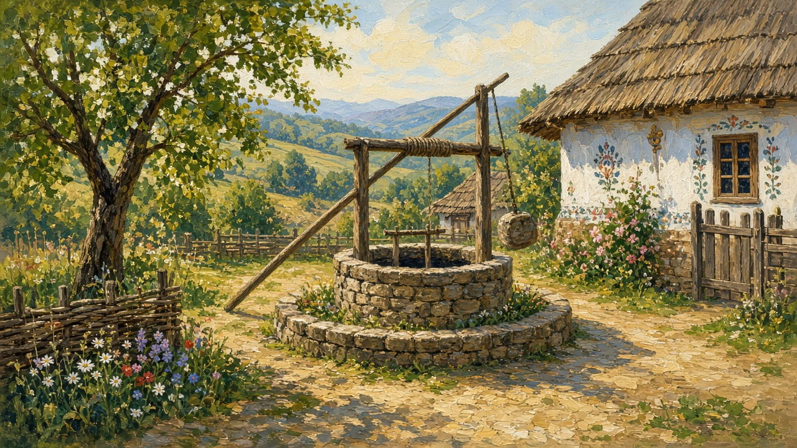
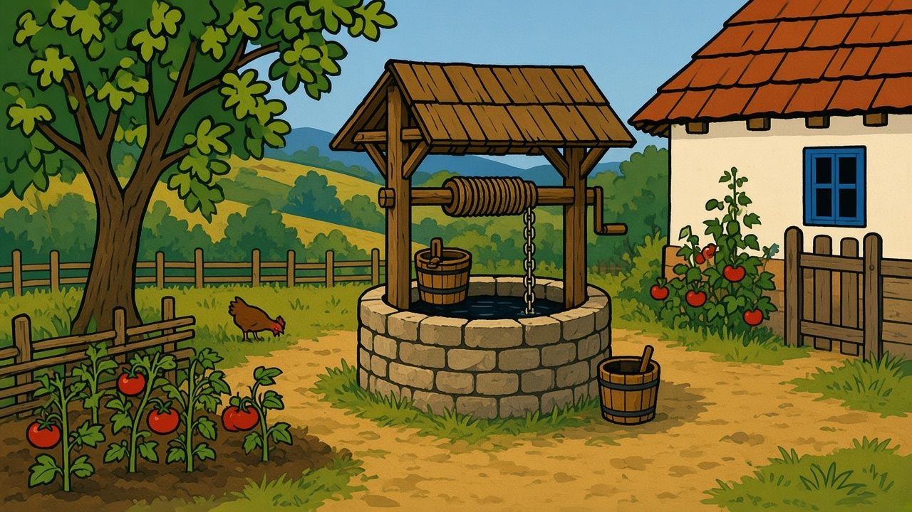

The well
Fântână. In a village yard it can be the first thing you hear in the morning: the creak of the wheel, the bucket hitting water, a chain that has learned one path down and one path up.

In the yard
Many older houses keep a well inside the fence, near the summer kitchen or the vegetable beds, off the line the cart uses. A wooden or concrete collar — the ghizd — a roof of boards against rain and leaves, and a lid you put back when you are done. You lean over and smell cool earth before you smell the water. Children are told not to play there and then they play there anyway, dropping pebbles to hear the splash. The dog knows the spot. So does everyone who comes to borrow a cup of water when their own pump fails.
Drawing water was work. Two buckets on a yoke across the shoulders, or one heavy can carried with both hands. The rope has one knot, where your hand stops. Clothes washed in a tub beside it. A splash for the chickens. A bucket that had sat in the sun was for the yard. The one just drawn was for the kettle. The house page maps the yard this sits in; the well is the cold center of that map — see the house.
The cumpănă and the wheel
Two machines do the same job. The cumpănă is the long arm on a forked post. A stone, or a box of stones, weighs the short end. You pull the pole, the bucket drops, you let it fill, and the weight helps the full bucket up. That arm against the sky is the shape people still mean by a village well. It suits a shallower shaft. You see it more on the plain than under a steep hill.
The other is a wheel or a crank over the collar. A drum, a chain that has worn a groove, a handle you wind. Deeper water. More turns for the same bucket. The morning creak is often this one. A roof of boards sits over the works, so rain and leaves stay out of the shaft. Both ask the same thing before the kettle boils: is there water, and can you lift it.

The shared corner
Not every house had its own. A pump or a deeper well at the street corner served a row of gates. People call that public spout a cișmea, or simply the pump. You came with cans. You waited your turn. You heard whose roof leaked and whose son was leaving for the city. The spout had a particular taste of iron. On hot afternoons the line grew longer and the talk slower. If the handle needed priming, someone in the line already knew how.
When piped water arrived, some of those corner wells stayed as landmarks and as backup — and as a place to lean when you had nothing urgent to carry. In a dry August the corner was often the one that still answered when a yard well had gone low. The road that holds it is on villages.
Ice, and a dry August
In winter the rim ices. Someone breaks a crust with a stick before the first draw. The rope goes stiff. The chain sticks to a glove. You clear a path from the door to the collar before you trust the kettle. A first bucket of slush goes to the hens. The woodpile and the iced lane are on winter. This is only the mouth of the shaft.
August is the dry one. The level drops. The garden wants a bucket every evening — tomatoes, beans, the rows that will be jars. You count. If the yard still has a cow or a pig, that animal drinks before the flowers do. When your well goes short you go to the neighbor or the corner, and you say so. What those rows become is on harvest. The dough that asks for a splash of this water is on bread.
Blessing and story
Water from a well shows up in blessings and in ordinary talk. A priest may bless a new well the way a house is blessed. At Boboteaza some villages still see him walk to the wells and the doors; that day is on the year. Folklore fills wells with wishes, with warnings about falling in, with the idea that the clearest water sits farthest from the road. None of that replaces the practical fact: before the pipe, the well decided how far you walked before coffee, how clean the floor stayed, and whether a garden lived through August. A morning at the collar — cold water, bread in the hand — is already the short piece on stories.
Apa de la fântână
In a lot of yards the well is capped now. A lid, a padlock, or a concrete plug, and the tap indoors does the daily work — sometimes because a shallow shaft sat too near the animals or the old latrine. Some families still keep the old wheel as ornament. Some still draw when the pressure drops, or when they want water that tastes like the ground they know. People still say apa de la fântână, and mean the well, not the tap. A bottle gets filled before the drive back to the block.
In apartment blocks there is no well at all — only the stair and the meter — and the memory of one sits in stories grandparents tell about mornings that started with a chain. Market day still meant loading what the garden grew; the well was how that garden drank. That square is on the market. This page is only the water point: collar, rope, cold air, and the habit of checking the level before you trust the day.